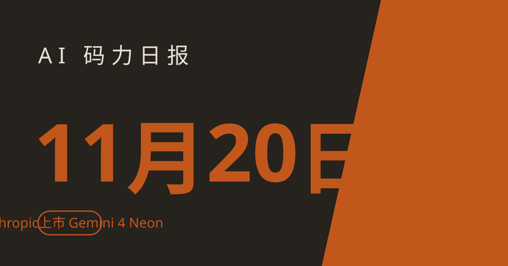

AI 码力日报 · 2026年11月20日

⚡ 一句话速览
- Anthropic 上市首日：开盘 111.50 美元，盘中市值一度冲到约 2 万亿美元，收盘约 97 美元。
- Google 发布 Gemini 4 Neon：编码 agent 榜单第一，比 Carbon 每任务便宜 32%。
- OpenAI 公开 Performance Factory：Codex agent 三个月查了 1700 多起 ChatGPT 性能回退。
- X 上最火的一条指控：中国四家实验室的新模型被指用禁运的 Blackwell 训练，证据来自权重里的 GPU 指纹——目前还是一家之言。
🤖 今日 AI Coding 动态
OpenAI Performance Factory：Codex 自己查 ChatGPT 为什么变慢
跟你有啥关系：以后你用的 ChatGPT 变慢了，第一个去查原因的可能不是工程师，而是一个 agent。OpenAI 11 月 19 日公开了内部系统 Performance Factory：性能告警一触发，Codex agent 就在云端接手调查——定位根因、提修复方案、交给工程师审核合并，上线后再由另一个 agent 验证性能是不是回到基线。三个多月跑了 1700 多起调查，平均每天 17 起；600 多起找到了根因，其中约 400 起 agent 给出了修复方案，最终约 50 个合并进 ChatGPT 的修复来自 agent 的提议。人工抽查 100 份诊断，70% 评为准确。OpenAI 还加了一道对抗评审：诊断和修复都要过另一个独立 Codex 会话的挑刺，约 25% 的诊断会被挑战。下一步是让 agent 先跑合成性能测试再提方案，以及探索低风险修复免人工直接发。提醒一句：这是 OpenAI 的内部系统，不对外提供。VentureBeat 独家报道
Google Gemini 4 Neon：中档模型拿下编码榜第一，比 Carbon 每任务便宜 32%
跟你有啥关系：想换个便宜又能打的编码主力，Neon 是这周最值得试的新选项。Google 11 月 18 日发布 Gemini 4 Neon，定位在 Hydrogen（快）和 Carbon（重）之间：1M 上下文，四个思考档位，API 定价 3/15 美元每百万 tokens（缓存输入 0.15 美元）。跑分用的是 Google 官方公布的数据：Artificial Analysis 综合指数 61 分排第三，编码 agent 指数 58.6 分排第一；Terminal-Bench 4.1 拿 65.2%，FrontierCode 2.0 默认档 46.2%。跟同档竞品放一起看：
| 模型 | Terminal-Bench 4.1 | API 定价（输入/输出，每百万 tokens） |
|---|---|---|
| Gemini 4 Neon | 65.2% | $3 / $15 |
| Claude Fable 5.2 | 65.8% | — |
| Claude Opus 5.5 | 65.8% | — |
| Copilot Fusion（max） | 71.2% | —（跑榜花了约 2000 美元） |
（Fable/Opus 分数来自 GitHub 官方 11 月 19 日贴出的 Terminal-Bench 4.1 榜单；Neon 分数来自 Google 官方博客。）
Neon 已经进了 Gemini API、AI Studio、Antigravity 和 Gemini 应用（Pro/Ultra 订阅），发布当天就在 Gemini Enterprise 里 GA。安全方面它还有个专门的网络安全版，漏洞发现（SEC-bench Pro 90.5%）、验证和修补都对标 Carbon 的水平，面向 Fairwind 计划的防御者开放。我的看法：分数上 Neon 和 Fable 5.2 基本一个档，赢在价格和速度——长会话、重工具调用的 agent 活可以先拿它当主力试试。Google 官方博客
Anthropic 上市首日：开盘 111.50 美元，盘中市值一度约 2 万亿美元
跟你有啥关系：昨天刚定的发行价，今天就变成了真金白银的股价——Claude 背后这家公司现在是上市公司了。Anthropic 11 月 19 日在纳斯达克挂牌（代码 ANT）：承销商把发行股数从 8.25 亿上调到 9.8 亿，发行价 83 美元，募资约 813 亿美元，是有史以来最大的一次 IPO；另有 260 亿美元的同步私募配售。开盘 111.50 美元，比发行价高 34%，盘中市值一度冲到约 2 万亿美元，收盘约 97 美元、涨幅约 17%。大盘当天其实在跌：道指跌 1100 点，标普连跌六天，Anthropic 的热度没能止住抛售。分析师已经开始给目标价，Melius 给出 155 美元、买入评级。提醒一句：S-1 披露的三季度营收 170 亿美元、同比涨 12 倍，但算力成本占比从二季度的 48% 涨到 58%，未来一年还有约 700 亿美元算力账单要付——股价故事才刚开场。Investopedia 当日市场复盘
Claude Fable 5.2 解出黑洞物理两道开放问题：2003 年的计算，六个星期干完了
跟你有啥关系：这不是“AI 会写代码”那个层面的新闻——这是模型第一次独立啃下理论物理里挂了二十多年的开放问题。Anthropic 11 月 19 日发文：今年 8 月，研究员 Hongbin Chen 让 Claude 列出黑洞物理里有意思的开放问题，挑出 22 个后派出一组 agent 各自攻关、后台跑了约六个星期，解出了其中两道。第一道是 Hawking-Page 相变问题：2003 年物理学家列出了判定相变是突变还是渐变的计算，但算式太大一直没人算完，Claude 算完了，结论是突变；第二道是模 bootstrap 方法的精度上限，Claude 发现了数值结果里物理学家漏掉的规律，借了一个数学方法算出了最优上限并证明无法再压低。两项结果 9 月已在 Lean 里形式化验证过，论文由 Claude 执笔、物理学家逐项核对过主要结论。提醒一句：这两项都不描述我们的宇宙、没有实际应用，价值在方法论——agent 组织起来做科研的路子，算是走通了一小步。Anthropic 研究博客
OpenAI“参差不齐的前沿”报告：2~4 小时研究任务，agent 能独立干完 46%
跟你有啥关系：想判断 coding agent 到底能不能替你干活，OpenAI 这份自家账本是最实在的参照。OpenAI 11 月 18 日发布第二份研究加速报告《The jagged frontier》：按“零人工干预完成率”算，2~4 小时的人类工作量任务，agent 的成功率从 3 月的 23% 涨到 10 月的 46%；4~8 小时的任务从 13% 涨到 35%。但分布极不均匀（8 月 1 日至 10 月 18 日数据）：监控训练任务 79%、回答技术问题 72%、沟通 69%、分析 58%，而启动训练任务只有 35%、写推理与服务栈代码只有 25%。OpenAI 自己也打了补丁：随着 agent 变强，研究员挑的任务也在变，所以涨幅里有一部分是“会挑任务了”，不全是模型变强了；而且这些都是内部估算，不是独立评估。101 名研究员的调查里，受访者中位数说，愿意拿 40% 的团队人头或 30% 的算力，去换三个月的前沿 coding agent 使用权。OpenAI 官方报告
DeepSeek API：联网搜索和网页抓取从 11 月 18 日起不再收费
跟你有啥关系：用 DeepSeek API 做带联网的 agent，每次调用能省下一笔搜索费。按 DeepSeek API 文档，从北京时间 11 月 18 日 12:00 起，调用模型时触发的服务端搜索和网页抓取不再计费，只收模型 tokens 的钱。之前这两项是单独计费的，对要频繁查资料、拉网页的 agent 来说，成本直接少一块。提醒一句：这是 API 侧的改动，网页版和 App 不受影响；具体账单以官方文档为准。AI Cluster 转述
Anthropic 大折扣抢新产品用户：最高每人 2000 美元 credits
跟你有啥关系：Claude Code 火了之后，Anthropic 现在急着把新产品也推起来，谈判桌上有肉吃。据 The Information 11 月 19 日报道（PYMNTS 转述），Anthropic 正在给客户开大折扣，推 Cowork、Managed Agents 和金融、网络安全等行业工具：个别情况下每人最高给 2000 美元 credits 让人试新产品，大客户折扣超过 30%，还有一种玩法是客户拿出发票证明自己的 AI 预算有多少比例给了 Anthropic，就能换折扣。背景是 Claude Code 的增长太快，新产品的增速还没跟上。提醒一句：这些折扣主要面向企业客户，个人用户就当看个行业风向——大厂开始为 agent 产品打价格战了。PYMNTS 报道
Codex 一天挖出 Rails 预授权 RCE：Ruby2Shell，GitLab 和 GitHub 企业版都中招
跟你有啥关系：今天最该动手的一条——先查你的 Ruby 版本。安全研究员用 Codex 摸清了 Rails 可达的攻击面，不到 24 小时就拿到了可用的 exploit 链，挖出 Ruby 大小写转换里的堆溢出：单字节编码里没有大写的 ß，转大写时写出两个字节 SS，边界检查却只算了一个，21 个 ß 就能溢出一位。漏洞编号 CVE-2026-132825，昵称 Ruby2Shell。受影响：Ruby 4.0.0–4.0.9、3.4.0–3.4.12、3.3.0–3.3.13，修复版 4.0.10、3.4.13、3.3.14 已发布；Rails 和经典版 Sinatra 默认配置就能打到。自托管产品里 GitLab（≤19.6.0）、GitHub Enterprise Server（≤3.22.5）、Chatwoot（≤4.20.0）截至撰写时还没有修复版，Mastodon、OpenProject、Discourse 已有补丁。完整 PoC 定在 11 月 25 日公开，没打补丁的抓紧这几天升级。同一个路数还挖出了 Java 的 Java4Shell（CVE-2026-114938，Base64 解码器内存破坏，CVSS 4.0 评 9.2），Oracle 已在 11 月 17 日的更新里修掉。Veria Labs 披露
白宫拟要求美企披露中国模型使用：不禁，但要公开说
跟你有啥关系：如果你公司在用 Qwen、DeepSeek、Kimi 这类模型，以后可能得在公开文件里写明白。据路透社报道，白宫正在权衡一项规则：要求美国公司披露对中国 AI 模型的使用情况，方式是公开披露而非禁令；众议院议员也已就企业使用情况展开质询。市场已经先动了：智谱（Z.AI）从 6 月高点跌了 85% 以上，投资者在消化新的远程访问芯片规则；腾讯、阿里、百度等 diversified 玩家反而上涨。提醒一句：这目前还是“在权衡”的提案，不是已落地的规则，但模型来源正在变成一个需要公开报告的事实。Anthony Wang 每日简报转述
🔧 工具更新日志
Claude Code 2.1.328：auto mode 铺到四大云厂商
Anthropic 11 月 19 日发布 Claude Code 2.1.328：auto mode 现在覆盖 Amazon Bedrock、Google Cloud Agent Platform、Microsoft Foundry 和 Claude apps gateway 上的 Claude Opus 4.6 与 Sonnet 4.6；交互式会话里如果没开 permission mode，默认就进 auto mode。Code Mode 和自托管 runner 的能力也扩了，另外还有一堆会话、终端工作流、远程控制和可靠性的修复。跟你有啥关系：走 Bedrock 或 Foundry 用 Claude Code 的人，终于不用守着权限确认一条条点了——但自动模式意味着它会自己决定调什么工具，先在不重要的仓库里试。Releasebot 更新追踪
💬 社区热议
X 上最火的指控：中国四家实验室的新模型被指用禁运 Blackwell 训练
@willdepue 11 月 19 日发帖称，他从公开权重里找到了法医级证据：DeepSeek、Moonshot、MiniMax 和蚂蚁的最新模型是用禁运出口到中国的英伟达 Blackwell 芯片训练的。他的说法是：模型初始权重的排布方式取决于 GPU 型号和随机种子，相当于硬件指纹；他搜了六万亿多种芯片布局与种子的组合，匹配上了 DeepSeek-V4-Pro、Kimi K3、MiniMax-M3 等六个模型，其中四个对上 GB200/GB300；用一台 Blackwell B300 和恢复出的种子，他原样复现了 DeepSeek-V4-Flash 未经训练的初始权重（bit 级一致），租来的 GB200 复现 Kimi K3 的相关系数 0.999995，而 Hopper H100 一个都复现不了。匹配强度 49 到 1385 sigma，远超随机巧合的水平（约 8 sigma）。他估计最大的两个模型各用了 2000~3000 块 Blackwell，单集群硬件成本 1.5~2 亿美元。这条帖子拿了 41.2K 点赞、670 万阅读，是当天 X 上最火的 AI 帖子。我的看法：证据链讲得很漂亮，但目前还是一家之言——他说有 OpenAI 和 Anthropic 的资深研究员独立验证过，可验证细节还没公开。在有人复现之前，先当个重磅传言看，别当定论。AgentFlare 当日 X 热帖汇总
HN：Anthropic 上市首日冲 2 万亿美元，723 分、1311 条评论
HN 首页头条就是 Anthropic 的上市首日，723 分、1311 条评论。评论区吵的核心就一个：这估值到底是泡沫还是真金白银。一派拿收入说事——前九个月营收 332 亿美元、同比 13 倍，增速配得上估值；另一派拿成本说事——未来一年 700 亿美元算力账单、9000 亿美元长期算力承诺，收入得一直这么涨才接得住。还有人翻出 11 月 19 日当天大盘的表现：道指跌 1100 点、标普六连跌，Anthropic 一家热闹没能救市。我的看法：吵估值没意义，上市本身才是重点——前沿模型公司第一次要按季度向公开市场交代，Claude 以后的每个动作都会多一双眼睛盯着。Investopedia 当日市场复盘
HN：Java4Shell 早在 9 月就有人报过，316 分、85 条评论
有意思的后续：HN 上有人翻出，Java4Shell 那个 AVX-512 Base64 解码器越界写的问题，早在 9 月就有人向 OpenJDK 提了 PR（#32781），当时就指出了短填充尾巴会把输出缓冲区写穿。评论区的讨论点很实在：漏洞发现的速度已经超过了修复和部署的速度——AI 一天能挖出好几个高危漏洞，但补丁从合并到进生产环境要以周计，这中间的窗口期才是真正的风险。提醒一句：跑 Java 服务的，11 月 17 日的 OpenJDK/Oracle 更新已经包含了修复，先升了再说。OpenJDK PR #32781
X：AI 找出的漏洞太多，打补丁打到系统宕机
@jstein_sun 11 月 19 日援引消息人士称，华尔街高管和美国国家安全局向国会作证：近期的几次系统宕机，是打补丁打出来的——AI 模型找出的漏洞太多，各机构抢在被攻击之前集中修复，结果修复潮本身压垮了系统。原话的意思是：AI 不是宕机的原因，是它找漏洞的效率太高，修复的节奏跟不上了。这条拿了 4.3K 点赞。我的看法：这和上面 Java4Shell、Ruby2Shell 是同一件事的两面——AI 找漏洞已经从新闻变成了基础设施问题，瓶颈不在发现，而在修复和部署。AgentFlare 当日 X 热帖汇总
X：Grok 机器人团队怎么用 agent 一个月发 3000 个 PR
SpaceXSI 的 Grok bot 工程师 Lauren Tan 在 AI Engineer Code Summit 上的分享被扒出来传开了（9.8K 点赞、220 万阅读）。核心做法就三条：agent 犯的每个错都变成一条 lint 规则，而不是改提示词；agent 用视频、截图和测试自己验证工作；结果是一个月往生产环境发了 3000 个 PR，大部分由 agent 自己合并。总结帖里那句“除了我自己的代码，其他代码都是 slop”也被疯转。我的看法：这才是 agent 工作流该有的样子——把教训沉淀成规则而不是堆提示词，验证靠运行结果而不是靠模型自己说“我觉得行了”。AgentFlare 当日 X 热帖汇总
🧩 AI 应用新品
Gemini for Mac：能直接操作你的 Mac 应用了
跟你有啥关系：Gemini 从聊天框里走出来，开始替你在电脑上干活了。Google 11 月 19 日给 Gemini for Mac 加了电脑控制：它能调用你授权的应用、文件和网站，在后台完成多步骤任务，你在前台继续干自己的事。Google 举的例子是批量修图、给二手平台准备上架信息、把指标和截图整理成演示文稿。敏感操作前会先征求你的同意，能用的应用由你来选。订阅要求是美国区的 Google AI Plus、Pro 或 Ultra（4.99 美元/月起），需要 Apple Silicon 的 Mac。另外 Gemini 应用也开始往 Apple CarPlay 上推，全球多语言陆续上线，开车时能直接对话。提醒一句：让 AI 操作整台电脑，权限给出去之前先想清楚边界。MacRumors 报道
🐑 今日羊毛
OpenCode Operation GLM：10 美元买 500 美元的 GLM 5.3 用量，截至 11 月 22 日
一句话：OpenCode 的 Go 订阅（10 美元/月）里 GLM 5.3 的月度用量额度一路加码：11 月 17 日先是 100 美元， overnight 涨到 200 美元，18 日晚又涨到 500 美元，Go Plus 则是 1000 美元；按 OpenCode 自己的估算，Go 档 5 小时大约能跑 2640 次请求。
- 怎么薅：订 OpenCode Go（10 美元/月），在模型列表里选 GLM 5.3 直接用就行，不用额外操作。活动追踪
- 有效期：加码额度截至 2026 年 11 月 22 日（截至撰写时），过期回到 200 美元
- 适合谁：想拿 GLM 5.3 当编码主力的 OpenCode 用户；提醒一句：这是月度用量额度不是充值余额，评论区也有人反映 OpenCode 侧的推理速度一般，先小额试试
美国大学生：Google AI Pro 免费 12 个月，12 月 31 日前领
一句话：美国 18 岁以上的在校大学生能免费领 12 个月 Google AI Pro（官方标价 19.99 美元/月，约省 240 美元），含 Gemini 高级模型、Gemini Notebook 和 2TB 存储。
- 怎么薅：去 Google 的学生优惠页，用 SheerID 验证学生身份后领取。各家学生免费方案汇总
- 有效期：2026 年 12 月 31 日前领取（截至撰写时），到期后按 19.99 美元/月收费，记得提前取消
- 适合谁：美国在校大学生；国内学生领不了，看看就好
美加大学生：OpenAI Codex 送 100 美元 credits
一句话：美国和加拿大的在校大学生能领 100 美元 Codex 使用额度（2500 credits），超出套餐限额的编码任务可以用它顶。
- 怎么薅：走 OpenAI 的学生优惠验证学生身份领取。各家学生免费方案汇总
- 有效期：官方没写领取截止日期，领到后 12 个月过期（截至撰写时）
- 适合谁：美加在校大学生、Codex 重度用户
Qwen 新加坡区：新用户免费额度，Qwen3.8 Max 100 万 tokens
一句话：Qwen 在新加坡区给新用户免费额度，Qwen3.8 Max 等模型能白嫖 100 万 tokens。
- 怎么薅：在阿里云新加坡区激活免费额度后直接调 API。免费 API 额度汇总
- 有效期：激活后 90 天内有效（截至撰写时）
- 适合谁：想低成本试 Qwen3.8 Max 的开发者；注意仅限新加坡区部署
⭐ 今日 GitHub 热门项目
firecrawl/firecrawl：给 agent 用的联网能力，一个命令本地跑起来
一句话介绍。解决什么问题：agent 要查资料、抓网页、转 Markdown，Firecrawl 把搜索、抓取、爬取、交互包成一个 API，还能以 MCP 服务器的形式直接挂进 Claude Code、Cursor、Codex。⭐ 约 204,116（截至撰写时）。适合：给 agent 接联网能力、不想自己写爬虫的人；新出的 Firecrawl Local 一个二进制就能在本地跑，抓取走本机，Keyless 每月还有 1000 免费 credits。项目地址
toeverything/AFFiNE：Notion + Miro 的开源替代，数据在自己手里
一句话介绍。解决什么问题：想找个开源、本地优先、能自托管的笔记+白板+知识库，AFFiNE 把文档、画布、数据库揉在一个工作区里，支持实时协同。⭐ 约 75,115（截至撰写时）。适合：受够了 Notion 订阅、想要数据主权的人；社区版 MIT 协议免费自托管。项目地址
zhouxiaoka/autoclip：一个链接，一键出片，长视频自动剪成短视频
一句话介绍。解决什么问题：播客、访谈、课程这类长视频，贴个链接就能自动剪成适配抖音、小红书、TikTok、Reels 和 YouTube Shorts 的短视频，字幕、封面、发布文案一次给齐。⭐ 约 11,168（截至撰写时）。适合：做短视频、播客切片的人；剪辑渲染都在本机，作者实测 1 小时 43 分的访谈 7.5 分钟出 10 条，文字模型成本约 0.09 元。项目地址
XiaoYouChR/Ghost-Downloader-3：一个下载器顶五个
一句话介绍。解决什么问题：HTTP、磁力/BT、FTP、M3U8、DASH、eD2k、YouTube 和 B 站全协议下载，一个应用全包，还带浏览器嗅探插件和 aria2 兼容的 RPC。⭐ 约 12,631（截至撰写时）。适合：经常要下各种资源、受够了装一堆下载器的人；Windows/macOS/Linux/Android 四平台都有。项目地址
🤗 Hugging Face 热门模型
apple/FastFrames-L：苹果的两步视频扩散模型，480p 视频交互延迟
是什么：苹果开源的 FastFrames，14B 的两步视频扩散模型（由 Wan2.1-14B 蒸馏而来），主打交互式延迟的视频生成。能干嘛：文本生成 480p 视频，S 版（1.3B）单卡每帧只要约 35.4 毫秒，还能配合 LingBot 做镜头控制的交互演示。下载量/点赞数：约 324 点赞（截至撰写时）。适合：做实时视频生成、交互式视频应用的研究者和开发者；需要英伟达 GPU 和 CUDA 12.8。模型地址
maxwell-model/Maxwell-V1-Flash：35B MoE，每 token 只激活 3B
是什么：Maxwell 团队的 MoE 语言模型，总参数 35B、每 token 只激活 3B，支持 256K 上下文，主打推理、agent 和长上下文。能干嘛：本地部署跑 agent、长文档推理；自带 vLLM 部署指南。下载量/点赞数：约 1.7K 下载、286 点赞（截至撰写时）。适合：想在消费级硬件上跑大模型 agent 的人。提醒一句：跑分是模型方自己公布的——SWE-Bench Verified 65.4%、Terminal-Bench 58.65%、GPQA-Diamond 86.52%、MMLU-Pro 85.46%，仅供参考。模型地址
🛠️ 值得一试的工具：Onlook
是什么：开源的可视化设计工具，在画布上直接改真实运行着的 React 应用——选中元素、提一句需求，接进来的 agent 就改你仓库里的真代码，而不是生成一个没法落地的 mock。
解决什么痛点：以前 AI 写界面要么是提示词来回猜、要么是生成了还得自己往项目里搬；Onlook 把设计和代码放在同一个画布上，改完就是改完了，Git 直接记下来。
免费额度：Apache 2.0 开源，macOS 桌面版免费下载；Windows 还在等候名单，Linux 暂无安装包、只能从源码构建。
verdict： 值得试——对要做落地页、改界面的前端和设计师来说，比纯提示词改 UI 直观得多；但它不自带模型，得有 Claude Code 或 Codex 订阅才跑得起来，等于说它是个“壳”，值不值取决于你手里有没有现成的 agent 订阅。项目地址
🎓 3 分钟小教程：查你的 Ruby 有没有中 Ruby2Shell 的招
前置条件：装了 Ruby 的开发机或服务器，或者自托管了 GitLab、GitHub Enterprise Server、Mastodon、Chatwoot 这类产品。
- 先看版本：
ruby -v——4.0.0–4.0.9、3.4.0–3.4.12、3.3.0–3.3.13 都在受影响范围；3.2 及更早已停止维护，没有修复版 - 升级到修复版：
rbenv install 4.0.10 && rbenv global 4.0.10（3.4 用 3.4.13，3.3 用 3.3.14）；系统包安装的跑brew upgrade ruby或sudo apt update && sudo apt install ruby，再ruby -v核对一次 - 自托管产品别只升 Ruby：GitLab（≤19.6.0）、GitHub Enterprise Server（≤3.22.5）、Chatwoot（≤4.20.0）截至撰写时还没有修复版，先等厂商补丁；Mastodon、OpenProject、Discourse 已有修复版，跟着升
- 别指望一条命令“测出来”：这个漏洞看版本号最准，修复版就是安全版
预期效果：三分钟确认自己在不在受影响范围；研究者的完整 PoC 定在 11 月 25 日公开，在那之前升上去就行。漏洞详情
🏆 本周 Top 5
周五加更：从本周日报里挑 5 条最好的。
- Anthropic 上市首日冲 2 万亿美元——史上最大 IPO，发行价 83 美元，AI 公司第一次直面公开市场。Investopedia 报道
- GPT-6.2 Astra/Sol：降价发布，不是能力发布——官方说赢了 Fable 5.2，独立测试说编码原地踏步；便宜 20% 是真的。The Rundown 报道
- Gemini 4 Neon：Google 的中档模型拿下编码榜第一——每任务比 Carbon 便宜 32%，Terminal-Bench 4.1 拿 65.2%。Google 官方博客
- Claude 解出两道黑洞物理开放问题——2003 年就摆在那里的计算，六个星期干完了，还过了 Lean 形式化验证。Anthropic 研究博客
- Codex 一天挖出 Rails 预授权 RCE——Ruby2Shell 影响 GitLab、GitHub Enterprise Server 等一票自托管产品，11 月 25 日公开 PoC。Veria Labs 披露
数据截至撰写时，仅供参考。